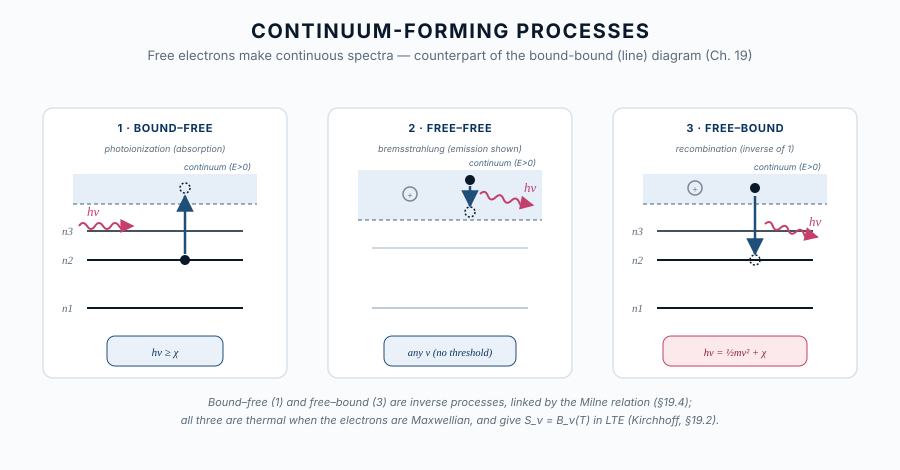
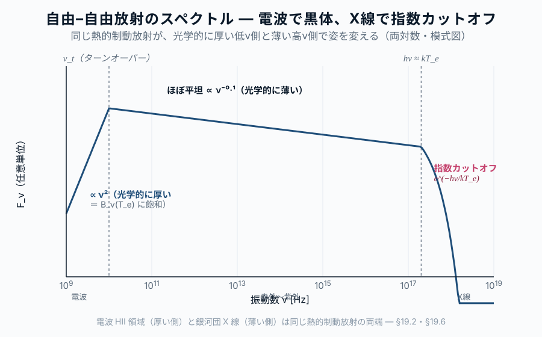
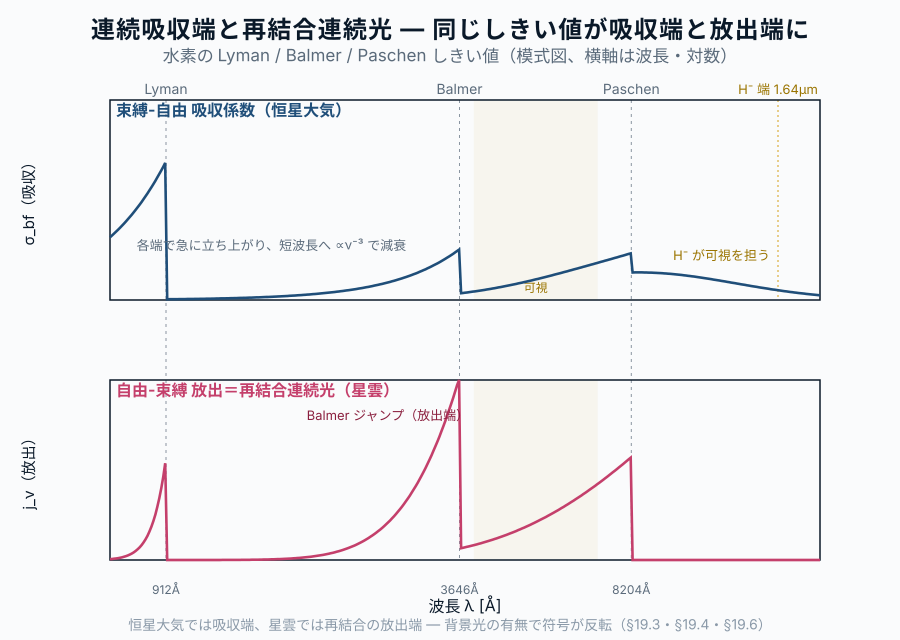

第19章 自由電子が作る連続光 ― 自由-自由・束縛-自由・再結合
この章の主題：第15章で「振動数依存不透明度」を、第17章で電離ガスの自由-自由放射を、いずれも吸収係数 \alpha_\nu と放射率 j_\nu を 与えられたもの として使った。本章はその出どころに降りる。希薄プラズマや恒星大気の 連続スペクトル を作るのは、自由電子が絡む三つの素過程 ― 自由-自由（制動放射）、束縛-自由（光電離）、その逆過程である 自由-束縛（再結合） ― である。これらを放出と吸収の両面で、Kirchhoff の法則と Milne 関係、そして Saha の電離平衡で結び、観測される連続吸収端・電波ターンオーバー・X 線の指数カットオフ・再結合連続光を逆引きする。最後に、再結合が連続光だけでなく 線スペクトル（再結合線）も生むことを示し、第VII部への橋とする。
この章の中心地図
中心地図：プランク関数 ― 本部の主題は「ずれ」
B_\nu(T) = \frac{2 h \nu^3}{c^2} \cdot \frac{1}{e^{h\nu/kT} - 1} \quad \overset{\text{現実}}{\longrightarrow} \quad \text{?}
第VI部（現実の宇宙へ戻る）は、観測される現実の天体スペクトルが、この理想的プランク関数からどのように、そしてなぜ ずれるかを扱う。ずれの主な起源：
- 振動数依存不透明度 → 修正黒体（第15章）
- 多温度成分の重ね合わせ → 多温度黒体スペクトル（第17・18章）
- 散乱効果（コンプトン化など）→ 高エネルギー側の変形（第18章）
- 非熱的放射の混入 → シンクロトロン・ベキ則の重なり
本部は、観測スペクトルを「理想的黒体＋ずれ」として読み解き、ずれの定量化から物理状態を引き出す視点を養う。
方針：本章の中心地図は、連続の吸収・放射係数を素過程に分解した形
\alpha_\nu^{\mathrm{cont}} = \underbrace{n_e n_i\,\bar\sigma_{\mathrm{ff}}(\nu,T)}_{\text{自由-自由}} \;+\; \underbrace{\textstyle\sum_i n_i\,\sigma_{\mathrm{bf}}^{(i)}(\nu)}_{\text{束縛-自由}}, \qquad S_\nu \overset{\mathrm{LTE}}{=} B_\nu(T)
である。占有数 n_e, n_i, n_X は Saha–Boltzmann（§19.5）が決め、放出 j_\nu と吸収 \alpha_\nu は Kirchhoff（LTE）／詳細つり合い（Milne） で結ばれる。「中心地図プランク関数のどの因子が、どの素過程から来るか」を素過程の側から裏打ちするのが本章である。
この章で答える問い
- 恒星スペクトルの紫外側の段差（Balmer jump など）は、何の素過程が作るのか。なぜ「端」が立つのか。
- HII 領域の電波連続光が、低振動数で黒体に漸近し高振動数で平坦になるのはなぜか（第17章 §17.6 の微視的根拠）。
- 銀河団の X 線連続光が e^{-h\nu/k_BT} で切れるのはなぜか。
- 太陽光球の可視連続光を、なぜ豊富な中性水素そのものではなく 微量の H⁻ が担うのか。
- 同じ再結合が、なぜ連続光（自由-束縛）と輝線（束縛-束縛カスケード）の 両方 を生むのか。
到達目標
この章を読み終えると、読者は次のことができるようになる：
- 自由-自由・束縛-自由・再結合（自由-束縛）の三過程を、エネルギー準位図の上で区別して説明できる。
- 光電離断面積 \sigma_{\mathrm{bf}}(\nu) のしきい値と連続吸収端の関係、\sim\nu^{-3} 減衰を述べられる。
- Milne 関係（詳細つり合い）で \sigma_{\mathrm{bf}} と再結合断面積を結び、再結合係数 \alpha_{\mathrm{rec}}(T) の意味と温度依存を説明できる。
- Saha 式を使って電離度から連続の \alpha_\nu, j_\nu を自己無撞着に決める道筋を述べられる。
- 連続吸収端・電波ターンオーバー・X 線カットオフ・再結合連続光を、観測から逆引きできる。
19.1 連続を作る三素過程 ― 全体像
[本文目安：B2]
第VII部で扱う線スペクトルは、原子の 束縛準位の間 の遷移（束縛-束縛、bound-bound）である。離散的な準位差 E_u-E_l に対応する振動数 \nu_0 にだけ光が出入りするので、スペクトルは 線 になる。
これに対し、電子の片側または両側が 自由状態（連続エネルギー E>0）にある遷移は、連続したエネルギー範囲を取れるので 連続スペクトル を作る。自由電子が関与する遷移は三種類ある：
- 束縛-自由（bound-free, bf）：束縛電子が光子を吸って電離する＝光電離（photoionization）。しきい値 h\nu \ge \chi で起こる。逆過程（§19.4）は 自由-束縛（free-bound）＝再結合で、光子を放出する。
- 自由-自由（free-free, ff）：自由電子がイオンの Coulomb 場で曲げられる際に光子を吸収・放出する＝制動放射（bremsstrahlung）。束縛準位を経由しないので、任意の振動数で起こる。
- （束縛-束縛：線。第VII部。）

用語：本章の三過程は、電子が Maxwell 分布（温度 T_e）にある限りすべて 熱的放射（第1章 §1.9）である。ここで二つの条件を明確に区別しておく：
- 熱的＝粒子（電子）のエネルギー分布が Maxwell-Boltzmann であること。これは放射を出す側の 粒子分布 の性質。
- 黒体的＝放射場が局所の温度の黒体 B_\nu(T) に達していること。これには 光学的に厚く、放射が熱化している ことが必要。
すなわち「熱的」であっても、光学的に薄ければ黒体にはならない。この区別は第17章 §17.6 で自由-自由放射について見た通りで、本章の三過程すべてに共通する（§19.6）。
19.2 自由-自由放射と吸収 ― 熱的制動放射
[本文目安：B3]
自由電子がイオンの Coulomb 場で加速度を受けると、古典電磁気（第V部）の通り電磁波を放つ。これが 自由-自由放射（制動放射）である。
ここで放出の量を表す係数を二つ区別しておく。放出係数（emission coefficient）j_\nu は単位体積・単位振動数・単位立体角あたりに放出されるエネルギー（次元は erg s⁻¹ cm⁻³ Hz⁻¹ sr⁻¹）であり、放射輸送方程式にソース項として現れる。これに対し、体積放射率 \varepsilon_\nu は全立体角に放出されるエネルギー（次元は erg s⁻¹ cm⁻³ Hz⁻¹）で、等方放射では両者は立体角積分 \varepsilon_\nu = 4\pi\, j_\nu で結ばれる。
電子が Maxwell 分布にあるとき、自由-自由の体積放射率は
\varepsilon_\nu^{\mathrm{ff}} \;\propto\; n_e\,n_i\,Z^2\,T_e^{-1/2}\,e^{-h\nu/k_BT_e}\,\bar g_{\mathrm{ff}}(\nu,T_e) \tag{22.1}
の形をとる（自由-自由放射は等方なので、放出係数は j_\nu^{\mathrm{ff}} = \varepsilon_\nu^{\mathrm{ff}}/4\pi）。Z はイオンの電荷、\bar g_{\mathrm{ff}} は Gaunt 因子（量子補正、\nu,T_e にゆるやかに依存し O(1)）。指数因子 e^{-h\nu/k_BT_e} は、振動数 \nu の光子を出すには電子が少なくとも h\nu の運動エネルギーを持たねばならず、その割合が Maxwell 分布で抑えられることを表す。
対応する 吸収係数 は、第17章 §17.6 で見たように
\alpha_\nu^{\mathrm{ff}} \;\propto\; n_e\,n_i\,Z^2\,T_e^{-3/2}\,\nu^{-2}\,\bar g_{\mathrm{ff}}\,\bigl(1-e^{-h\nu/k_BT_e}\bigr) \tag{22.2}
括弧の (1-e^{-h\nu/k_BT_e}) は 誘導放出補正（第11章・第21章 §21.2 と同じ因子）である。ソース関数は放出係数（単位立体角あたり）と吸収係数の比 S_\nu = j_\nu/\alpha_\nu で定義されるので、等方放射で j_\nu^{\mathrm{ff}} = \varepsilon_\nu^{\mathrm{ff}}/4\pi を用いる。式 22.1 と 式 22.2 の比をとると、n_e,n_i も \bar g_{\mathrm{ff}} も消えて
S_\nu^{\mathrm{ff}} = \frac{j_\nu^{\mathrm{ff}}}{\alpha_\nu^{\mathrm{ff}}} = \frac{1}{4\pi}\frac{\varepsilon_\nu^{\mathrm{ff}}}{\alpha_\nu^{\mathrm{ff}}} = \frac{2h\nu^3}{c^2}\frac{1}{e^{h\nu/k_BT_e}-1} = B_\nu(T_e) \tag{22.3}
となり、Kirchhoff の法則 S_\nu=B_\nu(T_e) が素過程のレベルで確かめられる（第3章・第5章）。立体角因子 4\pi は j_\nu と \varepsilon_\nu の換算に現れるが、係数の振動数・温度依存はそのまま B_\nu(T_e) を再現する。すなわち自由-自由放射のソース関数は、つねに電子温度の黒体である。
観測スペクトルの形を決めるのは、ここから先の 光学的厚さ \tau_\nu=\int\alpha_\nu^{\mathrm{ff}}\,ds である。式 22.2 の \nu^{-2} により、
- 低振動数（電波）：\alpha_\nu^{\mathrm{ff}} が大きく光学的に厚い → I_\nu\to B_\nu(T_e)。HII 領域の電波連続光が黒体に漸近する（第17章 §17.6 のターンオーバー）。
- 高振動数・高温・希薄（X 線）：光学的に薄く、観測される F_\nu\propto e^{-h\nu/k_BT_e} の 指数カットオフ。銀河団の高温ガス（T_e\sim10^7〜10^8 K）が典型（第18章）。

問い：自由-自由放射は全帯域で「熱的」なのに、なぜ全帯域で単一の黒体スペクトルには ならない のか？
短答：黒体になるのは光学的に厚い帯（低 \nu）だけ。高 \nu では光学的に薄く I_\nu\approx\tau_\nu B_\nu \ll B_\nu となって黒体から下にずれ、e^{-h\nu/k_BT_e} で切れる。「熱的（Maxwell 分布）」と「黒体（光学的に厚い熱平衡放射場）」は別条件である（第17章 §17.6）。
19.3 束縛-自由 ― 光電離断面積と連続吸収端（H⁻ を含む）
[本文目安：B3]
束縛電子が h\nu\ge\chi の光子を吸って自由になる過程が 光電離（束縛-自由吸収）である。下準位 n の電離エネルギーを \chi_n とすると、吸収はしきい振動数
\nu_{\mathrm{th}} = \chi_n/h \tag{22.4}
で 急に立ち上がり、それ以上の振動数では水素様原子で
\sigma_{\mathrm{bf}}(\nu) \;\propto\; \frac{Z^4}{n^5}\,\nu^{-3}\,g_{\mathrm{bf}}(\nu,n) \qquad (\nu\ge\nu_{\mathrm{th}}) \tag{22.5}
と \nu^{-3} で減衰する（Kramers の断面積、g_{\mathrm{bf}} は束縛-自由 Gaunt 因子）。しきい値での不連続な立ち上がりと \nu^{-3} の減衰が、観測される 連続吸収端（continuum edge）を作る。水素では
- Lyman 端（n=1、\lambda=912 Å、紫外）
- Balmer 端（n=2、\lambda=3646 Å、可視と紫外の境）
- Paschen 端（n=3、\lambda=8204 Å、近赤外）
と、下準位が浅くなるほど端の波長が長くなる。これが第15章 §15.3 で「振動数依存不透明度」として与えた連続吸収端の 微視的な起源 である。各準位の占有数 n_i（Boltzmann／Saha、§19.5）が、どの端がどれだけ立つかを決める。
H⁻ ― 低温星の可視連続不透明度の主役
水素の束縛-自由端はいずれも紫外〜近赤外にあり、可視のど真ん中には水素中性原子の端がない。それなら太陽（T_{\mathrm{eff}}\simeq5800 K）の光球は可視で透明なはずだが、実際は可視全域で不透明である。担い手は中性水素そのものではなく、負水素イオン H⁻ ― 水素原子に電子がもう一つゆるく束縛したイオン ― である。
H⁻ の束縛エネルギーはわずか 0.754 eV しかない。したがって束縛-自由しきい波長は
\lambda_{\mathrm{th}}^{\mathrm{H}^-} = \frac{hc}{0.754\ \mathrm{eV}} \simeq 1.64\ \mu\mathrm{m} \tag{22.6}
で、1.64\ \mum より短い 可視〜近赤外の全域 で光電離吸収が効く（吸収のピークは \sim0.85\ \mum）。さらに長波長側では H⁻ の 自由-自由 吸収（§19.2 と同型）が連続して効く。
H⁻ が低温星で卓越するのには、Saha 平衡（§19.5）が効いている：
- 中性水素が豊富 であること（H⁻ の素材）。高温星では水素が電離して中性 H が枯れ、H⁻ も消える。
- 自由電子の供給 があること。低温星では水素はほとんど電離しないので、自由電子は 電離ポテンシャルの低い金属（Na, K, Ca, Mg, Fe など）の電離が供給する。したがって H⁻ 不透明度は電子密度 n_e（≒金属量と Saha）に比例して増える。
高温星（O・B 型）では水素・ヘリウムの束縛-自由／自由-自由と 電子散乱（第15章 §15.5）に主役が交代する。「中性水素が主成分なのに、可視の連続不透明度は微量イオン H⁻ が担う」という逆転は、連続スペクトルの逆引きが Saha 平衡と分かちがたく結びついていることを示す好例である。
観測との対応：太陽スペクトルの連続光のなだらかな形（可視で最大、紫外・赤外へ向けて落ちる）は、H⁻ の吸収係数の波長依存（\sim0.85\ \mum にピーク）でよく説明される。恒星大気モデル（第15章 §15.3、Mihalas 1978）では H⁻ が G・K 型星の連続不透明度の標準的な第一成分として組み込まれている。
19.4 再結合 ― 束縛-自由の逆過程と Milne 関係
[本文目安：B3]
光電離（束縛-自由）の 逆過程 が 再結合（recombination）である：自由電子がイオンに捕まって準位 n に落ち、余ったエネルギーを光子として放つ。
e^- + X^+ \;\longrightarrow\; X(n) + h\nu \tag{22.7}
捕まる前の電子の運動エネルギーを \tfrac12 m_e v^2 とすると、放出光子のエネルギーは
h\nu = \tfrac12 m_e v^2 + \chi_n \tag{22.8}
である。電子は連続的な速度分布（Maxwell）を持つので、放出される光子も 連続スペクトル になる ― これが 自由-束縛放射（free-bound emission）＝再結合連続光（recombination continuum）である。ただし h\nu は最小でも \chi_n（v\to0）なので、再結合連続光は各準位のしきい \chi_n で 下端（放出端） を持ち、そこから高振動数へ裾を引く。吸収側の連続吸収端（§19.3）と同じ位置に、今度は 放出の端 が立つ。

Milne 関係 ― 詳細つり合いが結ぶ吸収と放出
熱平衡では、光電離（吸収）と再結合（放出）が振動数ごとに釣り合う（詳細つり合い、第6章）。この釣り合いから、再結合断面積 \sigma_{\mathrm{rec}}(v) と光電離断面積 \sigma_{\mathrm{bf}}(\nu) が直接結ばれる ― Milne 関係：
\sigma_{\mathrm{rec}}(v) = \frac{g_n}{2\,g_{+}}\,\frac{(h\nu)^2}{m_e^2 c^2 v^2}\,\sigma_{\mathrm{bf}}(\nu) \tag{22.9}
g_n, g_{+} は再結合後の準位とイオンの統計重率、因子 2 は自由電子のスピン状態数。これは第11章で Einstein 係数 A,B を詳細つり合いで結んだのと 同じ論法 の連続版である：放出の量（A や \sigma_{\mathrm{rec}}）を、吸収の量（B や \sigma_{\mathrm{bf}}）から熱平衡の要請だけで決める。
準位 n への再結合率を Maxwell 分布で平均したものが 再結合係数
\alpha_n(T) = \langle \sigma_{\mathrm{rec}} v\rangle = \int_0^\infty \sigma_{\mathrm{rec}}(v)\,v\,f_{\mathrm{Maxwell}}(v,T)\,dv \tag{22.10}
で、単位は \mathrm{cm^3\,s^{-1}}。Milne 関係から \sigma_{\mathrm{rec}}\propto v^{-2}\sigma_{\mathrm{bf}} であり、Maxwell 平均をとると \alpha_n(T)\propto T^{-1/2} 程度（係数の精密値は Gaunt 因子と準位和に依存し、全準位和の場合 \alpha_A\propto T^{-0.7\sim-0.8}）の 温度の減少関数 になる。高温ほど電子が速く通り過ぎて捕まりにくい、という直観に合う。
用語：全準位（n\ge1）への再結合を足したものを case A、基底状態（n=1）への直接再結合で出る Lyman 連続光が周囲に再吸収されて実質効かない極限を case B と呼ぶ（§19.7 で線スペクトルとして再登場）。星雲では多くの場合 case B が適切である。
19.5 Saha 平衡と連続放射の自己無撞着
[本文目安：B3]
§19.2–19.4 の各係数は、いずれも n_e（電子）、n_i（イオン）、n_X（中性原子の各準位）という 占有数 に比例する。これらを決めるのが、電離反応 X \rightleftharpoons X^+ + e^- の熱平衡条件 ― Saha の式 である：
\frac{n_{X^+}\,n_e}{n_X} = \left(\frac{2\pi m_e k_B T}{h^2}\right)^{3/2} 2\,\frac{g_{X^+}}{g_X}\,e^{-\chi/k_BT} \tag{22.11}
（導出と記号は付録 A.3.3 を参照。\chi は電離エネルギー、右辺の 2 は自由電子のスピン。）Saha の式は Boltzmann 分布（第7章 §7.3、準位間の占有比）の電離版であり、両者を合わせた Saha–Boltzmann が、
\text{温度 }T \;\longrightarrow\; \text{電離度・各準位占有 }n_e,n_i,n_X \;\longrightarrow\; \alpha_\nu^{\mathrm{ff}},\ \sigma_{\mathrm{bf}}\text{ の重み},\ \varepsilon_\nu^{\mathrm{rec}}
という連鎖で、連続の吸収・放射係数を 自己無撞着 に与える。LTE が成り立つ限り、この連鎖の出力はつねに S_\nu=B_\nu(T)（Kirchhoff、式 22.3）に帰着する ― 素過程が何であってもソース関数は局所温度の黒体になる、というのが LTE 連続放射の要点である。
注意（観測）：恒星大気では H⁻ 不透明度（§19.3）が n_e に比例し、その n_e は金属の Saha 電離で決まる。したがって連続スペクトルの形そのものが、間接的に金属量・表面重力（\log g）の情報を運ぶ。連続と線の双方を Saha–Boltzmann で一貫して解くのが現代の恒星大気モデルである（第15章 §15.3、第21章 §21.4）。
19.6 観測への逆引き
[本文目安：B2]
本章の三過程は、連続スペクトルの特徴的な形から物理量を読み出す道具になる：
- 連続吸収端（束縛-自由、§19.3）：恒星大気の Balmer jump の大きさから有効温度・表面重力を、端の有無から組成・電離段階を逆引きする。
- 電波の折れ曲がり（自由-自由、§19.2）：低振動数の F_\nu\propto\nu^2 への飽和から 電子温度 T_e を、ターンオーバー振動数から 発光量度 \mathrm{EM}=\int n_e^2\,ds を読む（第17章 §17.6、演習 17-5）。
- X 線の指数カットオフ（自由-自由、§19.2）：F_\nu\propto e^{-h\nu/k_BT_e} の傾きから銀河団高温ガスの T_e\sim10^7〜10^8 K を測る（第18章）。
- 再結合連続光のジャンプ（自由-束縛、§19.4）：星雲の Balmer 連続光ジャンプ の大きさは T_e に依存し、輝線とは独立な電子温度診断を与える。
観測との対応：恒星大気では Balmer 端は 吸収側の段差（端より青で不透明度増）として、星雲では同じ 3646 Å に 再結合連続光の放出ジャンプ として現れる。同じしきい値が、幾何条件（背景光の有無）で吸収にも放出にも見える ― これは線スペクトルで同じ遷移が吸収線にも輝線にもなる対比（第20章 §20.3）と同じ論理である。
19.7 再結合は線も生む ― 連続と線をつなぐ電離
[本文目安：B2]
再結合（§19.4）で電子がいったん高い準位 n に捕まると、そこからは 束縛-束縛遷移 を次々と下って基底状態へ落ちる（再結合カスケード）。各ステップが線光子を出すので、再結合は連続光（自由-束縛）だけでなく 再結合線（recombination lines）も生む。HII 領域で輝く Hα など Balmer 輝線は、この再結合カスケードの産物である。
e^- + \mathrm{H}^+ \;\longrightarrow\; \mathrm{H}(n)\ \underbrace{+\,h\nu_{\mathrm{fb}}}_{\text{連続（§19.4）}} \;\overset{\text{カスケード}}{\longrightarrow}\; \text{Balmer・Paschen 輝線（束縛-束縛）}
すなわち 電離と再結合は、連続スペクトル（自由-自由・束縛-自由）と線スペクトル（束縛-束縛）の両方を同時に統べる。case A／case B（§19.4）の区別は、Lyman 線光子が再吸収されるかどうかという 線 の問題が 連続 の再結合率に跳ね返る、両者の結合の一例である。
ここから先 ― 束縛-束縛遷移の振動数・強度・選択則・線形 ― が第VII部の主題である。本章で整えた電離・再結合の枠組みは、第21章（線形成の Einstein 係数）・第22章（原子準位と選択則）・第24章（電離度診断と再結合線）で線スペクトルの言葉に翻訳され、最終的に第VIII部（第26章）の QED で連続と線が同じ Hamiltonian の二側面として統合される。
19.8 使えるようになった道具
- 連続を作る三素過程（自由-自由・束縛-自由・自由-束縛）の準位図による区別
- 自由-自由の放出 式 22.1 と吸収 式 22.2、Kirchhoff S_\nu=B_\nu(T_e)、電波ターンオーバーと X 線カットオフの起源
- 光電離断面積 \sigma_{\mathrm{bf}}\propto\nu^{-3} としきい値が作る連続吸収端（Lyman/Balmer/Paschen）
- H⁻ が低温星の可視連続不透明度を担う仕組みと Saha 依存
- Milne 関係による \sigma_{\mathrm{bf}}\leftrightarrow\sigma_{\mathrm{rec}}、再結合係数 \alpha_n(T)\propto T^{-1/2} 級
- Saha–Boltzmann による占有数 → 連続係数の自己無撞着な決定
- 再結合連続光と再結合線が同一過程から出ること（連続↔︎線の橋）
この章で何がわかったか
中心地図に戻る
中心地図プランク関数 B_\nu(T) を作る連続の吸収・放射係数は、自由電子が絡む三つの素過程に分解できる：
- 自由-自由（制動放射）：\alpha_\nu\propto n_e n_i\,\nu^{-2}T^{-3/2}。低 \nu で黒体（電波）、高 \nu で指数カットオフ（X 線）。
- 束縛-自由（光電離）：\sigma_{\mathrm{bf}}\propto\nu^{-3} としきい値が連続吸収端を作る。可視は H⁻ が主役。
- 自由-束縛（再結合）：束縛-自由の逆過程。Milne 関係で結ばれ、再結合連続光と再結合線を生む。
これらを束ねるのが Saha–Boltzmann（占有数）と Kirchhoff／Milne（放出と吸収の関係）で、LTE ではソース関数はつねに S_\nu=B_\nu(T) に帰着する。電離・再結合は連続と線の両方を統べ、次の第VII部（線スペクトル）への橋となる。
演習問題
[導出補完] 模範解答 は折りたたみを展開して確認できる（オンライン版）。まず自力で解いてから開くこと。
問題 19-1 電波 HII 領域のターンオーバー（自由-自由の逆引き）
[★ 難易度：☆☆ ] [理解を深める]
§19.2・第17章 §17.6 の自由-自由吸収 \alpha_\nu^{\mathrm{ff}}\propto n_e n_i T_e^{-3/2}\nu^{-2} を使う。等温スラブ（電子温度 T_e、LTE）の射出強度は I_\nu=B_\nu(T_e)(1-e^{-\tau_\nu})。
- 光学的に厚い極限（低 \nu）で I_\nu\to B_\nu(T_e) となること、電波帯（Rayleigh–Jeans）で F_\nu\propto\nu^2 になることを示せ。
- 光学的に薄い極限（高 \nu）で F_\nu がほぼ平坦（\propto\nu^{-0.1}）になることを、\tau_\nu\propto\nu^{-2.1} から示せ。
- ターンオーバー振動数 \nu_t（\tau_{\nu_t}\simeq1）から何が読めるか述べよ。
関連：§19.2 自由-自由／電波の漸近は第17章 §17.6（演習 17-5）、光学的に厚い極限は§5.6。
模範解答（問題 19-1）
(1) \tau_\nu\gg1 で 1-e^{-\tau_\nu}\to1 ゆえ I_\nu\to B_\nu(T_e)。電波帯 h\nu\ll k_BT_e では B_\nu\simeq2\nu^2k_BT_e/c^2\propto\nu^2、よって F_\nu\propto\nu^2。観測される輝度温度は T_b\to T_e に飽和する。
(2) \tau_\nu\ll1 で 1-e^{-\tau_\nu}\simeq\tau_\nu\propto\nu^{-2.1}。F_\nu\propto\nu^2\cdot\nu^{-2.1}=\nu^{-0.1} でほぼ平坦。
(3) \nu_t は \tau_{\nu_t}\simeq1 で決まり、\tau_\nu\propto\mathrm{EM}\,\nu^{-2.1}T_e^{-1.35} なので、飽和値から T_e、\nu_t から発光量度 \mathrm{EM}=\int n_e^2 ds（密度 × 経路長）が読める。
答え：低 \nu で F_\nu\propto\nu^2（T_b\to T_e）、高 \nu で \propto\nu^{-0.1}。飽和から T_e、\nu_t から \mathrm{EM}。
問題 19-2 Balmer 連続光ジャンプ ― 吸収端と放出端
[★ 難易度：☆☆ ] [理解を深める]
§19.3・§19.4 の束縛-自由。水素 n=2 の電離エネルギーは \chi_2=13.6/2^2=3.40 eV。
- Balmer 端の波長 \lambda=hc/\chi_2 を求め、3646 Å に一致することを確かめよ。
- 恒星大気では Balmer 端より 短波長側で連続光が暗くなる（吸収段差）のに、星雲では同じ波長に 明るいジャンプ（放出）が出る。なぜ符号が逆に見えるか、背景光の有無で説明せよ。
- 星雲の Balmer 連続光ジャンプが電子温度 T_e の診断になる理由を一言で述べよ。
関連：§19.3 束縛-自由、§19.4 再結合／吸収線と輝線の幾何は第20章 §20.3、線のソース関数は第21章 §21.3。
模範解答（問題 19-2）
(1) \lambda=hc/\chi_2=(1.24\times10^4\ \mathrm{eV\,\AA})/3.40\ \mathrm{eV}=3647 Å。Balmer 端（3646 Å）に一致。
(2) 恒星大気は背後に明るい連続光源（深層）があり、Balmer 端より青では n=2 からの光電離吸収（§19.3）で不透明度が跳ね上がるため、より浅い（冷たい）層しか見えず暗くなる＝吸収段差。星雲は背景連続光がなく、n=2 への再結合（§19.4）で出る自由-束縛放射そのものを見るため、しきい 3646 Å の高振動数側に放出のジャンプが立つ。同じしきい値が幾何条件で吸収にも放出にも見える。
(3) 再結合連続光の形（ジャンプ高さと裾の傾き）は電子の Maxwell 分布の温度を反映するので、T_e に依存する。輝線比とは独立な温度診断になる。
答え：3647 Å。背景光ありで吸収段差、なしで再結合の放出ジャンプ。ジャンプ形が T_e 依存。
問題 19-3 Milne 関係と再結合係数の温度依存
[★ 難易度：☆☆☆ ] [導出補完]
§19.4 の Milne 関係 \sigma_{\mathrm{rec}}(v)\propto (h\nu)^2/(v^2)\,\sigma_{\mathrm{bf}}(\nu) と h\nu=\tfrac12 m_e v^2+\chi_n を使う。
- しきい近傍（\tfrac12 m_e v^2\ll\chi_n）で h\nu\simeq\chi_n とみなすと、\sigma_{\mathrm{rec}}\propto v^{-2}\sigma_{\mathrm{bf}}(\nu_{\mathrm{th}}) となることを示せ。
- 再結合係数 \alpha_n(T)=\langle\sigma_{\mathrm{rec}}v\rangle を Maxwell 分布で平均すると、\alpha_n(T)\propto T^{-1/2} 級になることを、\sigma_{\mathrm{rec}}v\propto v^{-1} と \langle v^{-1}\rangle\propto T^{-1/2} から示せ。
- 高温ほど再結合係数が小さい物理的理由を一言で述べよ。
関連：§19.4 再結合／詳細つり合いの論法は第11章 §11.3、Maxwell 分布は第7章 §7.3。
模範解答（問題 19-3）
(1) Milne 関係 \sigma_{\mathrm{rec}}\propto (h\nu)^2 v^{-2}\sigma_{\mathrm{bf}} で、しきい近傍 h\nu\simeq\chi_n（定数）とすれば \sigma_{\mathrm{rec}}\propto v^{-2}\sigma_{\mathrm{bf}}(\nu_{\mathrm{th}})。
(2) \sigma_{\mathrm{rec}}v\propto v^{-2}\cdot v=v^{-1}。Maxwell 平均 \langle v^{-1}\rangle=\int v^{-1}f(v)dv は f(v)\propto v^2 e^{-m_ev^2/2k_BT} で、変数を x=v/\sqrt{k_BT/m_e} にとると \langle v^{-1}\rangle\propto(k_BT)^{-1/2}。よって \alpha_n(T)\propto T^{-1/2}。
(3) 高温では電子の典型速度が大きく、イオンの近くを速く通り過ぎて捕まりにくい（相互作用時間が短い）ため、再結合係数が小さくなる。
答え：\sigma_{\mathrm{rec}}\propto v^{-2}\sigma_{\mathrm{bf}}、\alpha_n\propto T^{-1/2}。高温ほど速く通り過ぎ捕まりにくい。
問題 19-4 X 線制動放射で銀河団温度
[★ 難易度：☆☆ ] [理解を深める]
§19.2 の高振動数（光学的に薄い）極限 F_\nu\propto e^{-h\nu/k_BT_e} を使う。k_B=8.617\times10^{-5} eV/K。
- 銀河団 X 線スペクトルの指数カットオフが h\nu\sim8 keV 付近で効くとき、電子温度 T_e を概算せよ。
- この T_e が 10^7〜10^8 K の範囲にあることを確かめ、なぜ銀河団ガスが「X 線で光る」のかを述べよ。
- 同じ自由-自由放射なのに、電波 HII 領域（問題 19-1）とは見え方が全く違う理由を、光学的厚さの観点から一言で述べよ。
関連：§19.2 自由-自由／高温降着・銀河団は第18章。
模範解答（問題 19-4）
(1) カットオフは h\nu\sim k_BT_e で効く。k_BT_e\sim8 keV \Rightarrow T_e\sim8\times10^3\,\mathrm{eV}/(8.617\times10^{-5}\,\mathrm{eV/K})\simeq9\times10^7 K。
(2) 9\times10^7 K は 10^7〜10^8 K の範囲。これだけ高温だと熱的制動放射のピークが X 線帯に来るので、銀河団ガスは X 線で明るく光る。
(3) 電波 HII 領域は低 \nu で 光学的に厚く 黒体に漸近するが、銀河団 X 線は高温・希薄で全帯域 光学的に薄い ため、放射率の形（指数カットオフ）がそのまま観測される。同じ熱的自由-自由でも光学的厚さで見え方が変わる。
答え：T_e\sim9\times10^7 K（10^7〜10^8 K）。高温ゆえ X 線で光る。電波は厚い／X 線は薄いの違い。
問題 19-5 H⁻ のしきい値と太陽光球の連続不透明度
[★ 難易度：☆☆ ] [理解を深める]
§19.3 の H⁻。束縛エネルギー 0.754 eV。hc=1.24\times10^4 eV·Å。
- H⁻ の束縛-自由しきい波長 \lambda_{\mathrm{th}}=hc/0.754\ \mathrm{eV} を求め、1.64\ \mum になることを確かめよ。
- 中性水素（n=1 の Lyman 端 912 Å、n=2 の Balmer 端 3646 Å）の束縛-自由端はいずれも可視中央にない。それでも太陽光球が可視全域で不透明なのはなぜか、H⁻ で説明せよ。
- H⁻ が低温星でのみ効き、高温星（O・B 型）では効かない理由を、Saha 平衡（中性 H と自由電子の供給）から述べよ。
関連：§19.3 H⁻、§19.5 Saha／恒星大気の振動数依存不透明度は第15章 §15.3。
模範解答（問題 19-5）
(1) \lambda_{\mathrm{th}}=1.24\times10^4\ \mathrm{eV\,\AA}/0.754\ \mathrm{eV}=1.64\times10^4 Å =1.64\ \mum。
(2) 1.64\ \mum より短い可視〜近赤外の全域で H⁻ の光電離吸収が効く（ピーク \sim0.85\ \mum）。中性 H の束縛-自由端は紫外（Lyman/Balmer）にしかないので可視を説明できないが、H⁻ が可視連続不透明度を担うため光球は可視で不透明になる。さらに長波長では H⁻ 自由-自由が続く。
(3) H⁻ には (i) 素材の中性 H と (ii) 余分な電子の供給源（自由電子）が要る。低温星では水素はほとんど中性で豊富、自由電子は電離ポテンシャルの低い金属の電離が供給する。高温星では水素が電離して中性 H が枯れ、H⁻ も作れない（自由電子は豊富でも素材がない）。よって主役は H・He の束縛-自由／自由-自由と電子散乱に移る。
答え：1.64\ \mum。H⁻ が可視連続不透明度を担う。低温星は中性 H 豊富＋金属由来電子で H⁻ が効くが、高温星は H 電離で素材が枯れる。
さらに学ぶための参考文献
- Rybicki & Lightman, Radiative Processes in Astrophysics (Wiley, 1979) — 自由-自由・束縛-自由・Milne 関係の標準的導出。
- Osterbrock & Ferland, Astrophysics of Gaseous Nebulae and Active Galactic Nuclei (2nd ed., 2006) — 再結合・case A/B・再結合連続光と再結合線。
- Mihalas, Stellar Atmospheres (W.H. Freeman, 2nd ed., 1978) — H⁻ を含む恒星大気の連続不透明度。
- Gray, The Observation and Analysis of Stellar Photospheres (3rd ed., 2005) — 連続不透明度の実務的な扱い。